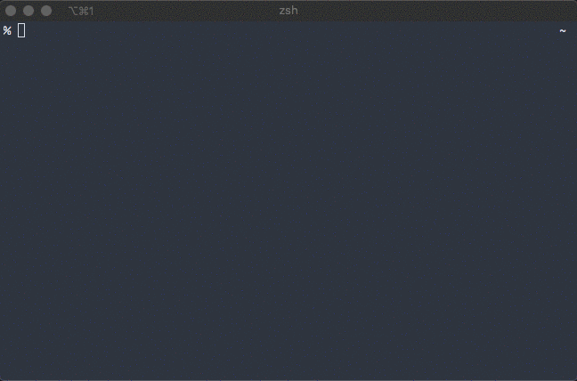

作業ファイルという習慣
昔に書いた記事で作業メモという習慣を続けている話をした。メモをとりながら開発するといろいろいいことがあったという話だった。そして、この習慣は今も続いている。
TODO管理ツールと作業メモで二重に作業を管理していることに気づき、運用を見直すことにした。
- 1つの作業につき、1つの作業ファイルを作るようにした。
- 作業ファイルをベースとしたTODO管理ツールを開発することにした。
作業ファイル
タイトルと完了/未完了をfront matterで書くことを仕様とした。
---
title: ブログを書く
done: false
---
# 2019-12-26
* アウトラインを書く
# 2019-12-27
* 文章に組み立てる
* スクショをとる
これまでは日報ファイルの中に各作業のメモを残していたけど、今後は逆に作業ファイルの中に日報を書くスタイルにした。この方が後で見返しやすかった。
新しいTODO管理ツール
作業ファイルを読み取って表示するTUIベースのツールを開発している。

まだ機能は不足しているけど、ファイルの変更を自動的に反映する機能をがんばって作り込んだ結果、使えないこともないくらいのレベルにはなった。